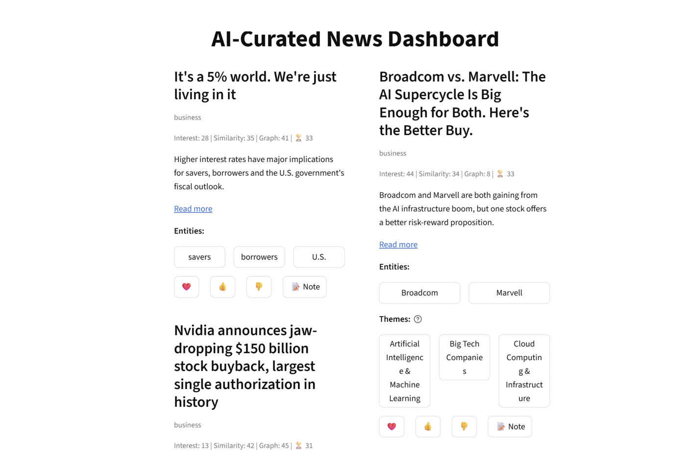
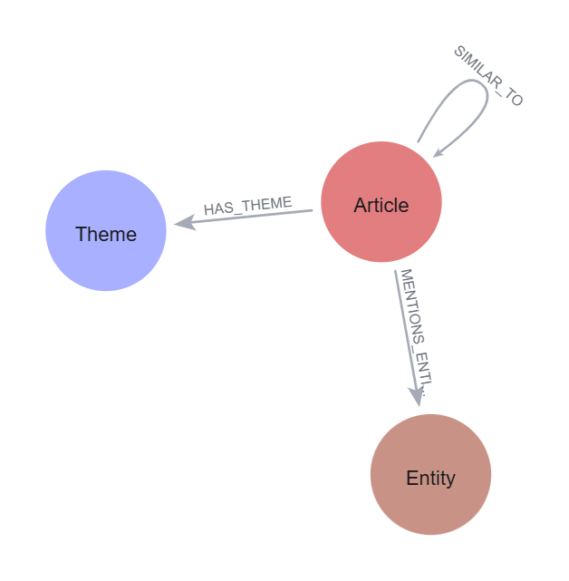
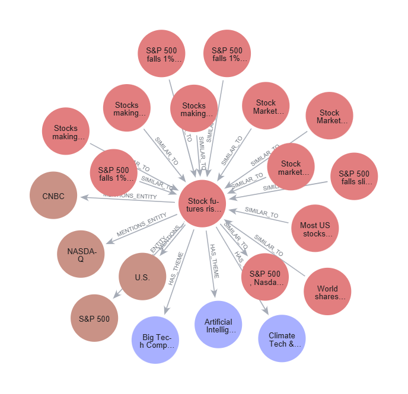
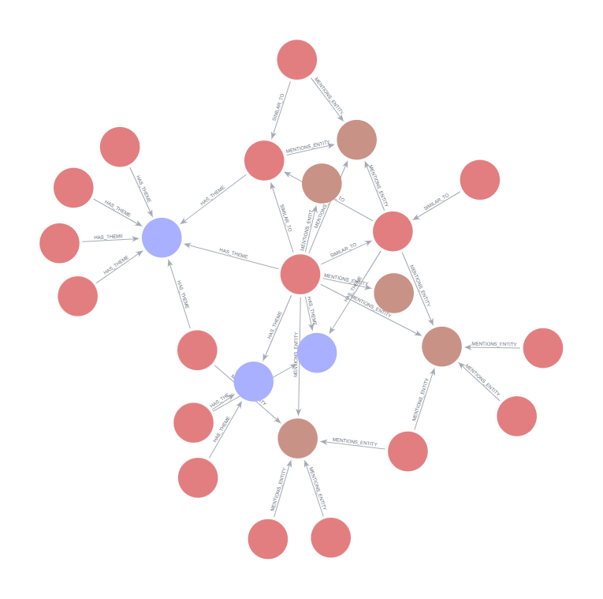

Dev Patel's personal project
Aura: an adaptive, RAG-based news feed
A self-hosted recommender I built and use every day. It pulls business and tech news, extracts entities and themes with open-source models, stores associations in a knowledge graph, and ranks articles incorporating multi-signal feedback.
454articles in graph
43rated by me
497extracted entities
25themes
1,902similarity + entity links
The product

How it works
- Fetch new business and tech headlines daily.
- Embed title and description for similarity score.
- Filter cheaply: Low score articles are dropped leaving promising articles for heavier models. Keeps my laptop from exploding.
- Extract important entities people, companies and countries.
- Classify each article into themes (eg: AI, Finance, Fed)
- Write to the graph: article nodes connected to entity nodes, themes nodes and other article nodes create a connected mesh of layered communities.
- Rank and collect feedback in the dashboard.
Ranking
The graph score looks at what I thought of an article's neighbours and articles with similar entities and themes. Secret sauce:
final = f(interest, similarity_to_liked, graph)
graph = f(similar_articles, shared_entities, shared_themes)
interest/feedback: f(love, like, -dislike, unrated)
The knowledge graph



Checking the feedback
A query over my reactions shows which themes I actually engage with. I use it to sanity-check the ranker and tune the weights.
| Theme | Articles | Liked | Liked rate |
|---|---|---|---|
| Stock Market & Investing | 44 | 8 | 18.2% |
| Corporate Earnings & Financial Reports | 50 | 7 | 14.0% |
| Big Tech Companies | 48 | 6 | 12.5% |
| Artificial Intelligence & ML | 118 | 14 | 11.9% |
| Global Trade & Economy | 47 | 5 | 10.6% |
| Cybersecurity & Data Privacy | 38 | 2 | 5.3% |
| Workplace & Future of Work | 37 | 1 | 2.7% |
Why it's relevant to AI Engineer I at Klaviyo
- PersonalizationThe same problem Klaviyo solves for brands: rank content for one person from their behaviour, and keep the ranking explainable.
- RetrievalVector similarity combined with graph traversal over extracted entities and themes, the same retrieval layer a GraphRAG system uses.
- Human in the loopExplicit feedback flows straight back into the graph and changes future scores. Queries over that feedback serve as a lightweight evaluation.
- Shipping itA FastAPI service that runs the daily fetch, feedback and cleanup pipelines, deployed with Docker Compose alongside MongoDB and Neo4j. The work included a data migration when I redesigned the graph schema.
Stack
PythonFastAPIDockerNeo4jMongoDBHugging FaceGLiNERsentence-transformersStreamlit